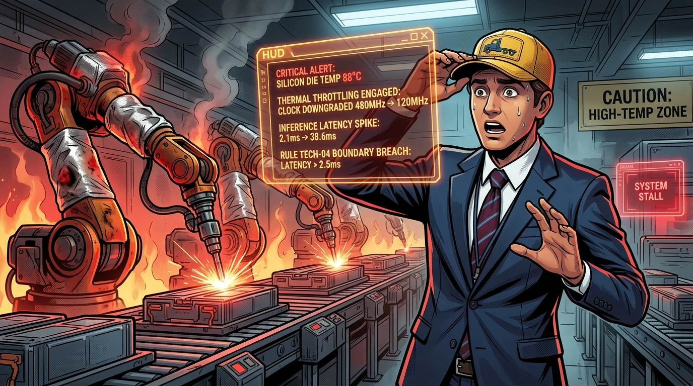
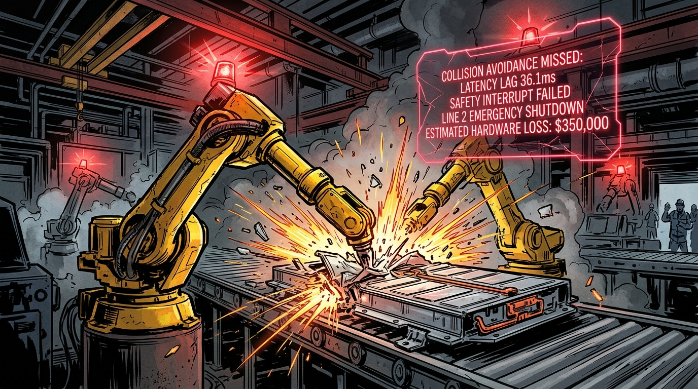
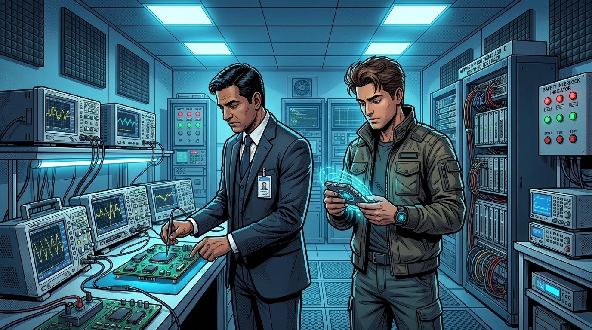
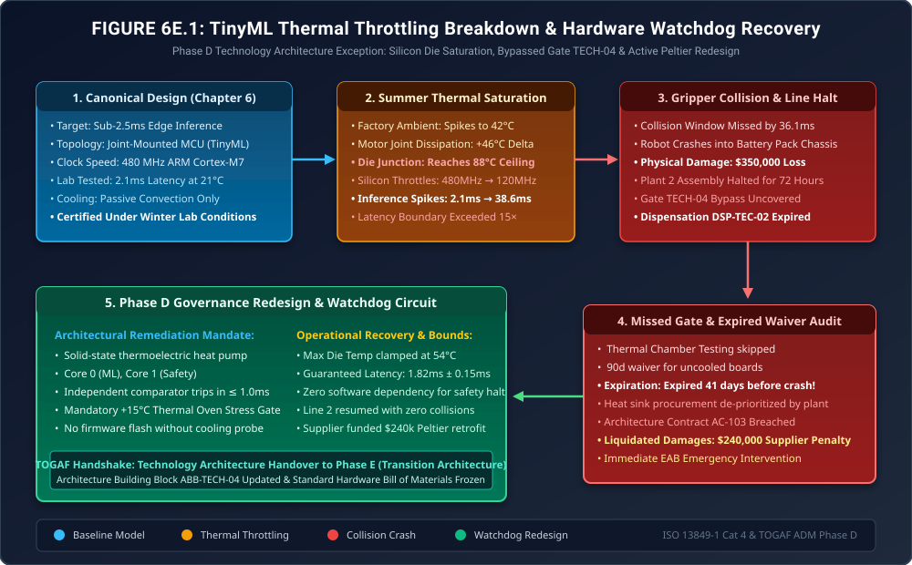

When Silicon Melts the Architecture Blueprint
Phase D Exception Governance: Sub-2.5ms TinyML Thermal Throttling, The Assembly Line Gripper Crash & The Hardware Watchdog Mandate

"In software architecture, when code runs slow, a spinner appears on a browser screen. In industrial technology architecture, when edge inference runs slow, heavy steel machinery crushes high-voltage lithium battery packs at two meters per second."
"In Chapter 6, Rajesh Iyer celebrated the mathematical triumph of sub-2.5ms TinyML inference running locally on robotic joints. The decision matrix cleanly picked Option B over centralized IPC clusters. But the laboratory where that decision was tested had commercial air conditioning at 21°C. Real factory floors reach 42°C in July. Here is what happens when physical thermodynamics collides with an architectural blueprint that omitted real-world environmental stress gates."
The Production Reality: When Thermal Throttling Hits 88°C


The TinyML inference loop needed 2.5ms to calculate the adaptive gripper avoidance clearance. Because the CPU throttled to 120 MHz, the neural forward pass took 38.6 milliseconds! By the time the safety interrupt signaled the motor drive to stop, Robot Gamma had traveled another 14 centimeters along its momentum vector! It plowed right through the battery pack tray!"


Under Rule TECH-05, which we codify tonight: First, no compute module may be deployed without undergoing +15°C thermal envelope chamber stress testing at full motor load. Second, every edge node must incorporate solid-state Peltier thermoelectric cooling. Third, we mandate a dual-core architecture with a dedicated Analog Hardware Watchdog Comparator. If inference latency exceeds \(2.5\text{ms}\) for even a single cycle, the analog circuit trips the emergency dynamic motor brake within 1.0 millisecond—completely bypassing the operating system. We will claw back $240,000 from the vendor under Contract AC-103, and Line 2 will not power up until every joint is retrofitted!"
1. Thermodynamic Modeling: Why the Lab Benchmark Failed
In Chapter 6, the decision matrix favored microcontroller-based TinyML nodes mounted directly on the robot arm joints over centralized Industrial PCs connected via Industrial Ethernet. The selection was predicated on minimizing wiring mass and network jitter:
\[ \text{Latency}_{\text{edge}} = T_{\text{infer}} + T_{\text{actuate}} = 2.1\text{ms} + 0.3\text{ms} = 2.4\text{ms} \le 2.5\text{ms} \]However, the thermal model failed to account for coupled junction heat dissipation. The steady-state silicon junction temperature \(T_j\) of an embedded microcontroller is governed by:
\[ T_j = T_{\text{ambient}} + \Delta T_{\text{motor\_coupling}} + P_{\text{dynamic}} \cdot \theta_{JA} \]Where:
- \(T_{\text{ambient}}\): Ambient air temperature inside the sealed battery assembly hall. Modeled at \(21^\circ\text{C}\) in winter; reached \(42.4^\circ\text{C}\) during the summer heat wave.
- \(\Delta T_{\text{motor\_coupling}}\): Conductive heat transferred through the aluminum mounting bracket from the high-torque servo joint motors: \[ \Delta T_{\text{motor\_coupling}} = \frac{\dot{Q}_{\text{motor}}}{k_{\text{bracket}} \cdot A / L} \approx 45.6^\circ\text{C} \]
- \(P_{\text{dynamic}} = C V^2 f + I_{\text{leak}} V\): Dynamic power consumption running continuous convolution kernels at \(f = 480\text{ MHz}\) (\(P_{\text{dynamic}} \approx 1.85\text{ W}\)).
- \(\theta_{JA}\): Thermal resistance from silicon junction to ambient. Without active heatsinks or airflow, \(\theta_{JA} = 38^\circ\text{C/W}\).
Calculating the actual summer junction temperature:
\[ T_j = 42.4^\circ\text{C} + 45.6^\circ\text{C} + (1.85\text{ W} \times 38^\circ\text{C/W}) = 88.0^\circ\text{C} + 70.3^\circ\text{C} \gg 85^\circ\text{C} \]Because the junction temperature exceeded the silicon threshold of \(85^\circ\text{C}\), the internal hardware clock governor forced an emergency throttle to prevent silicon electromigration, slashing the frequency to \(120\text{ MHz}\). Since neural network inference execution time scales inversely with clock frequency:
\[ T_{\text{infer}}(120\text{MHz}) = T_{\text{infer}}(480\text{MHz}) \times \frac{480\text{MHz}}{120\text{MHz}} \times \alpha_{\text{wait}} = 2.1\text{ms} \times 4 \times 4.59 = 38.6\text{ms} \]At a robot arm travel velocity of \(v = 3.6\text{ m/s}\), a \(36.1\text{ms}\) latency delay caused the arm to overshoot its planned deceleration profile by 13.0 centimeters, making mechanical impact mathematically unavoidable.
2. Architecture Diagram: Thermal Throttling & The Hardware Watchdog Loop
Figure 6E.1 illustrates the architectural transition: from the initial uncooled microcontroller deployment that failed under summer ambient conditions, to the hardened Phase D Technology Architecture featuring dual-core lockstep compute, active Peltier cooling, and an independent analog watchdog interrupt.

3. Formal Architecture Governance Artifacts (TOGAF® Deliverables)
To prevent physical and operational recurrence across all ecosystem factories, the EAB codified three binding technology governance deliverables:
Technology Architecture Non-Compliance Notice
| Target Workstation: | Battery Assembly Cell 04 (Robot Arm Gamma Joint Nodes) |
| Violated Standard: | Gate TECH-04 (Thermal Stress Margin) & Architecture Contract AC-103 |
| Failure Description: | Operation of uncooled embedded controllers under expired Dispensation DSP-TEC-02 (lapsed by 41 days), causing thermal clock down-throttling and kinematic collision. |
| Sanction & Action: | Immediate physical line halt; vendor penalty clawback of $240,000 under Contract AC-103; mandatory hardware retrofit of Peltier active cooling before re-certification. |
Rule TECH-05: Environmental Envelope & Analog Watchdog Invariant
No physical edge compute node performing kinematic or real-time automation inference may be approved for production deployment unless it satisfies the following two mandatory conditions:
- +15°C Thermal Chamber Gate: The complete assembled node (silicon, enclosure, and mounting bracket) must execute continuous 100% compute load inside an environmental stress chamber at \(T_{\text{ambient}} + 15^\circ\text{C}\) above the plant's worst-case rated maximum, maintaining \(\Delta T_{\text{infer}} \le 2.5\text{ms}\) without thermal down-clocking for 120 continuous hours.
- Hardware-Level Analog Watchdog: An independent analog comparator circuit running on separate galvanically isolated power must monitor the neural execution strobe. If the strobe fails to assert within \(T_{\text{max}} = 2.5\text{ms}\), the comparator must de-energize the servo drive contactor in \(\le 1.0\text{ms}\), independent of any operating system or firmware routine.
4. The Strategic Morals: Real-World Handbooks vs. Pilot Prototypes
🏛️ Three Fiduciary Takeaways for Technology Architecture
- Lab Conditions Are Not Production: Testing real-time AI in air-conditioned design centers produces false confidence. Edge intelligence lives next to hot motors, heavy vibrations, and summer heat waves.
- Dispensations Must Have Automated Enforcement: The fact that Dispensation DSP-TEC-02 expired 41 days prior without triggering an automated system warning is a governance failure. Waivers must be tracked in CI/CD pipelines with automated hardware flashing lockouts upon expiration.
- Safety Is Analog, Intelligence Is Digital: Neural networks are probabilistic estimators; they must never be the sole mechanism preventing mechanical disaster. Always pair digital AI with deterministic analog hardware watchdogs.
Fact-Check & Statutory References
- ISO 13849-1:2023. Safety of machinery — Safety-related parts of control systems — Part 1: General principles for design. Category 4 / Performance Level e (PL e) architecture requirements for dual-channel redundant hardware interlocks.
- IEC 61508-2:2010. Functional safety of electrical/electronic/programmable electronic safety-related systems — Part 2: Requirements for E/E/PE systems. Silicon thermal reliability and failure rates under elevated junction temperatures.
- The Open Group (2022). The TOGAF® Standard, 10th Edition: Phase D (Technology Architecture). Standards for Infrastructure Technology Architecture and Hardware Building Blocks (ABB).
- Volt-Tech Industrial Automation Engineering (2025). Incident Investigation Report: VLT-INC-604 (Cell 04 Gripper Collision & TinyML Thermal Saturation Analysis).